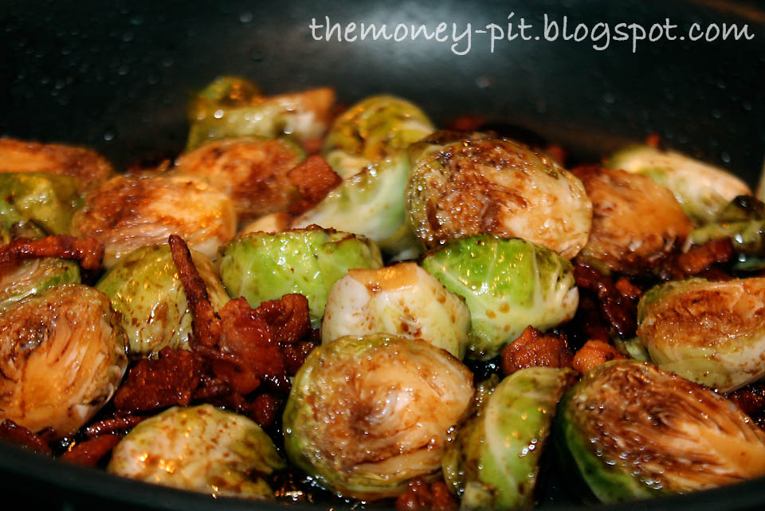

Have you ever wanted to make you veggies more fun? This brown sugar brussel sprout recipe is sure to impress!
Ingredients
- Brussel Sprounds
- 2 Tabelspoons Brown Sugar
- Crushed red pepper flakes
- 2 tabelspoons Soy Sauce
- 2 clove Garlic
- 1/2 stick of Butter
Steps
- Preheat the oven to 450
- Remove the stems from the sprouts and then cut them in half
- Toss the sprouts in a bowl with olive oil, salt and pepper
- Place the sprouts in the oven for 20 minutes
- Pre-heat a pan on the stove under medium-low heat
- Half way through the sprouts cook time melt the butter in a pan, then add the brownsugar, garlic and soysauce into the pan
- After the sprouts finish cooking toss them in the pan to combine
- Plate and enjoy!
Hungry for more?